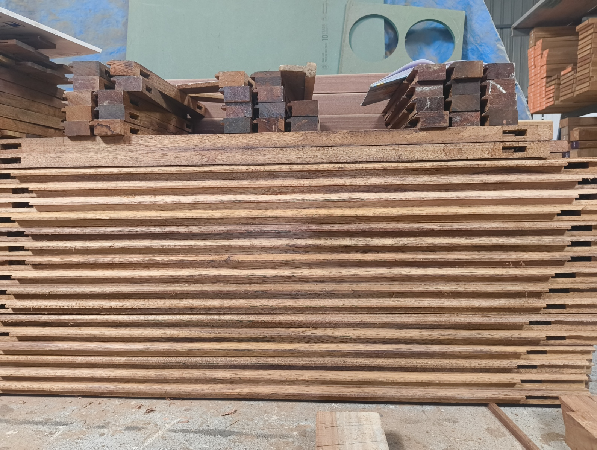
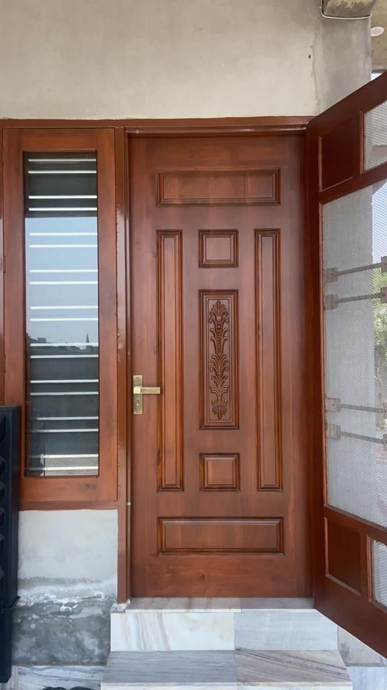

Our Services
Louvered, panelled, and solid options in quality hardwood. Built to your exact dimensions, supplied ready to fit.
Ventilation & Light
Louvered shutters are the classic choice for windows that need airflow without sacrificing privacy. The angled slats allow air and filtered light to pass through while keeping direct sun and rain out.
Available in fixed and adjustable louver configurations. Custom widths, heights, and louver pitch to suit your opening. Suited to bedrooms, bathrooms, kitchens, and balconies.

Traditional & Elegant
Panelled shutters bring a traditional, architectural character to any window. Raised or flat panels framed in hardwood, a design that complements both heritage homes and contemporary interiors.
Available in 2-panel and 4-panel configurations. Species and finish to your specification. Can be supplied raw for site finishing or factory pre-sanded.
Clean & Contemporary
Solid shutters are the most durable option: full-panel hardwood shutters with no gaps, engineered for dimensional stability across Bangalore's seasonal humidity shifts.
A popular choice for main road-facing windows, utility rooms, and any application where maximum privacy and weather resistance are needed. Sizes fully customisable. Supplied as bare timber or with standard hardware provisions.
Materials
All shutters are available in your choice of wood species. Each lot is inspected for moisture content and naturally seasoned before production, ensuring dimensional stability in the finished shutter.
The benchmark hardwood for Indian joinery. Dense, straight-grained, and highly resistant to moisture and termites. The premium choice for long-life window shutters.
A robust, close-grained hardwood with excellent structural properties. Comparable durability to Burma teak at accessible pricing, well-suited for large-volume projects.
Fine-grained with a uniform golden-brown tone. Machines cleanly for detailed louver and panel profiles. A strong choice where both aesthetics and performance matter.
A dense, reddish hardwood prized for its stability. Highly resistant to warping across Bangalore's seasonal humidity shifts, making it a natural choice for window applications.
A cost-effective structural hardwood with good load-bearing properties. Often specified for utility windows and secondary spaces where budget is a consideration.
Share your window dimensions and species preference and we will respond with a detailed quote within 48 hours.
Talk to Us on WhatsApp